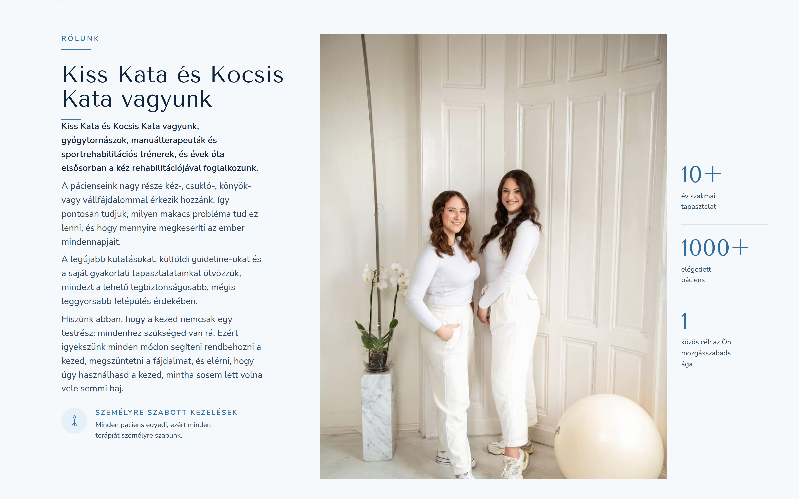
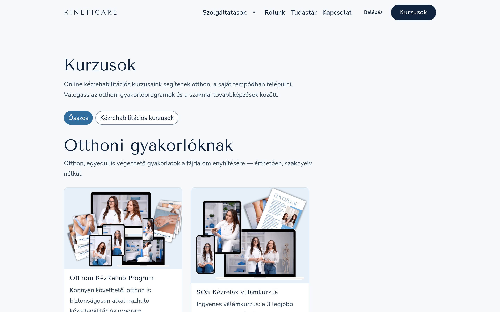
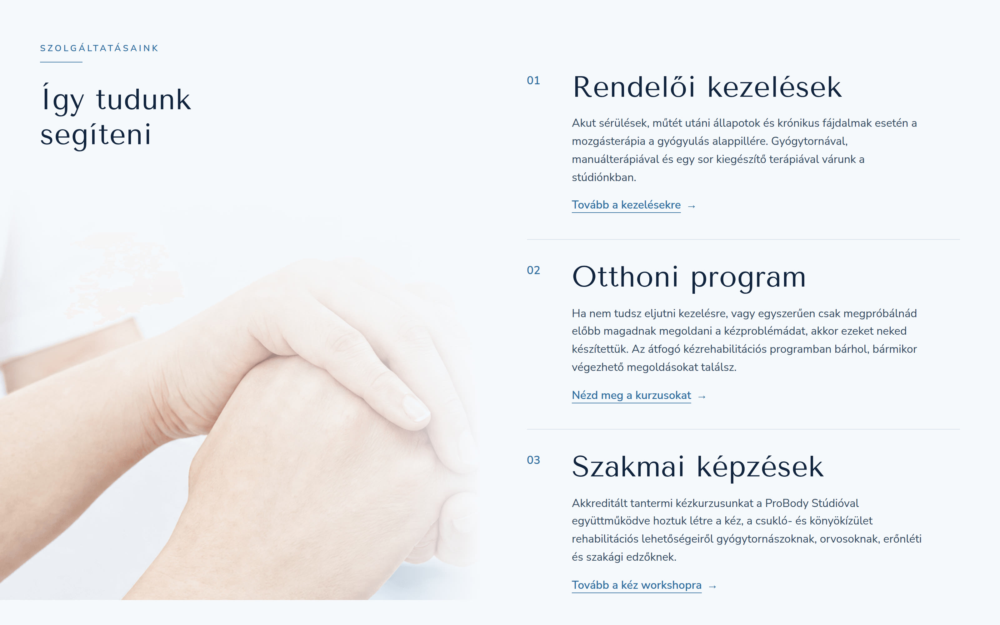
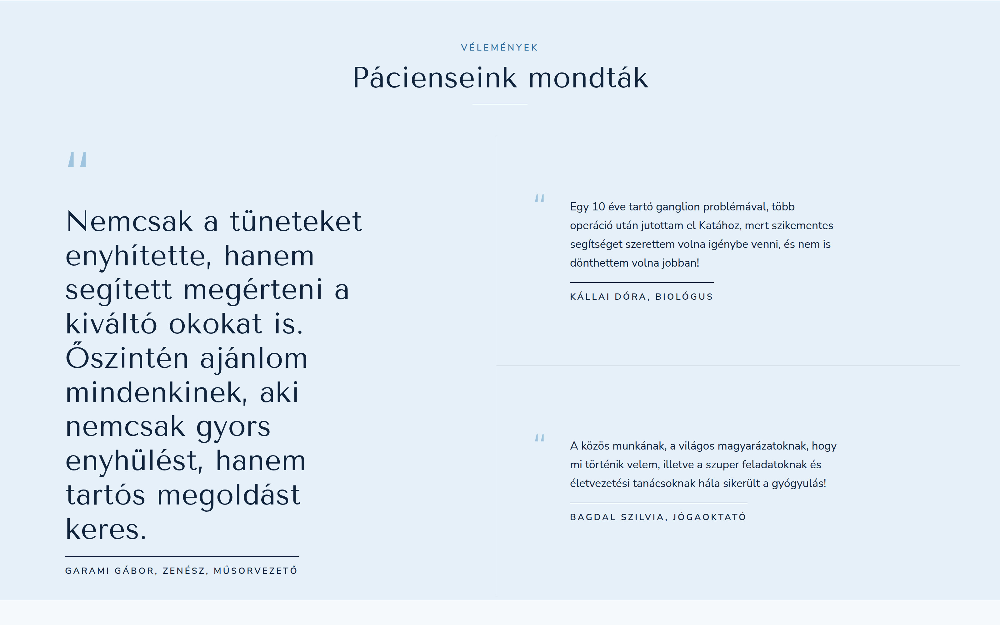
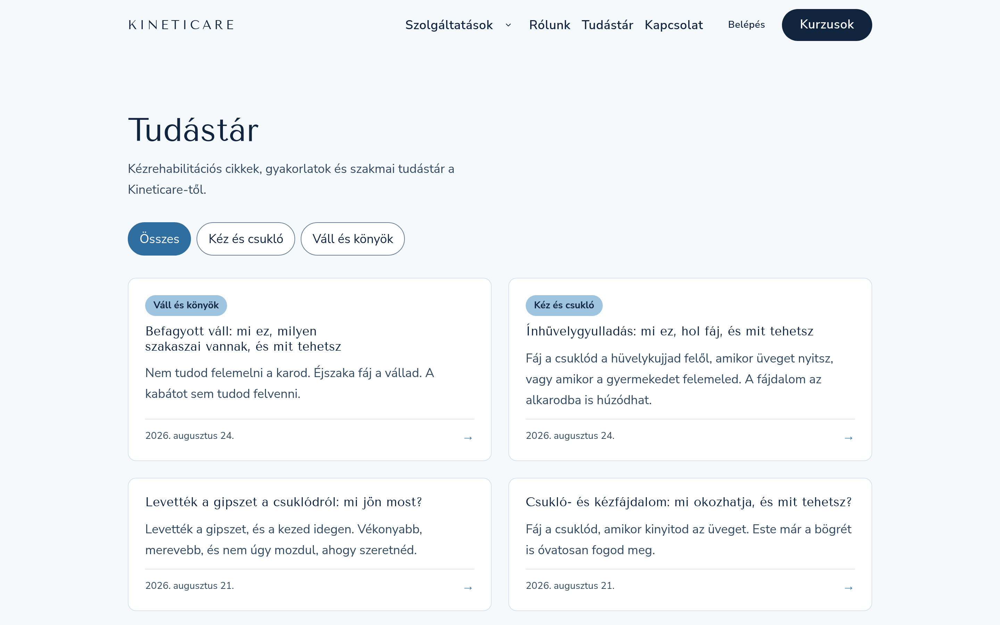

The practice behind the product
Kata Kiss and Kata Kocsis are physiotherapists who have spent more than ten years on one part of the body: the hand and the arm. They treat carpal tunnel syndrome, stiff wrists after a fracture, tennis elbow and shoulder pain, and they train other physiotherapists in the methods they use.
A practice like this has a hard ceiling. Two pairs of hands can see a fixed number of patients a week, and everyone else waits or gives up. Kineticare had to carry the same method to patients who will never sit in the treatment room, without turning careful clinical work into a shortcut.

Why trust is the real design problem in digital health
Someone with six months of wrist pain has already searched the internet. They have watched free videos, read forum threads and followed advice that led nowhere. When they open another site about hand pain, they are not looking for enthusiasm. They are looking for a reason to believe this one is different.
That changes what good design means here. A stock photo of a smiling model reads as marketing rather than medicine. A headline promising fast results reads as a sales page. Hiding the price or the method costs more credibility than it wins attention.
So the site is built around what a patient can verify: who these two people are and what they trained in, what the treatment involves step by step, and what happened to other patients with the same complaint. Every claim on the page has its evidence next to it.
A visual system for a clinical subject
The identity pairs a deep navy with light, cool neutrals, using Tenor Sans for headings and Nunito Sans for reading. Type is large, line spacing is generous and pages have room to breathe, because someone reading in pain should not have to work for the information.
Photography does most of the credibility work. Instead of stock imagery, the site uses close photographs of hands and portraits of the two physiotherapists in their own space. Patients recognise the subject at a glance, and the pictures earn their place twice over by showing grip positions and the scale of the movements the courses teach.
How the patient journey is structured
Navigation follows how a problem develops rather than how the business is organised. Acute pain comes first, then structured rehabilitation, then keeping the result. Someone who woke at three in the morning with a numb hand and someone who finished six weeks of therapy need different first screens, and both find theirs without reading a menu twice.
The free SOS Kézrelax course sits at the entrance to that path. It gives relief exercises to anyone who asks, with no payment and no consultation. It also does the selling in the only way that works in this category: visitors experience the teaching quality before spending anything, then decide on a paid programme from evidence rather than a promise.
Paying patients get a members area where their programme is the only thing on screen. Course video, exercise order and progress live there, away from the marketing pages.

Services written in the patient's words
The three offers are in-clinic treatment, the home exercise programme and professional training for other physiotherapists. Each one names who it is for, what happens during it and what the person leaves with, in the order a patient asks those questions.
Clinical terms appear only where the exact term is what someone searches for. "Carpal tunnel syndrome" stays, because it is both a diagnosis and a query. Everything around it is written the way the therapists explain it in the room.

Proof placed where doubt appears
Patient stories sit next to the sections that create hesitation instead of in a block at the bottom of the page. A visitor reading about the online course sees, in the same screen, what happened to a musician who could not hold his instrument and a yoga teacher who wanted to stop the problem returning.
Each story names the person, their occupation and their complaint. Anonymous praise convinces nobody in healthcare, and a testimonial that avoids specifics reads as invented.

What I built
I engineered the platform as well as designing it. It runs on Next.js with Payload as the content system, so the two physiotherapists publish articles and course material themselves without a developer in the loop. Course video streams from a CDN, payments go through Barion, and the members area gates paid content.
Pages render on the server, which keeps them fast and fully readable by search engines. Consent handling follows GDPR, analytics stay off until a visitor agrees, and the application ships a strict content security policy. A health product carries more privacy risk than a portfolio site, and that has to be true in the code rather than in a policy page. I have worked under the same constraint in mobile banking and in digital bank onboarding.
How the knowledge hub earns search traffic
The Tudástár is the part of the platform designed to reach patients who have never heard the name Kineticare. Its articles answer the questions people type when a symptom starts: what to do once a wrist cast comes off, why a shoulder freezes, whether tendonitis needs rest or movement.
Each article stays on one question, answers it in the opening paragraphs and then points to the course that treats that specific problem. A reader who came for information has already met the practice by the time paying for anything comes up.

The result
Kineticare launched as a complete product: brand, interface, content system, payments, member accounts and infrastructure, designed and built by one person. The two physiotherapists reach patients beyond their appointment book and run the publishing platform themselves.
The project also settled something I keep returning to in health products. Trust is not a layer added at the end with a testimonial slider. It is the structure of the thing: what you show first, what you charge for, what you give away, and how honestly you describe a treatment that only works if the patient does the exercises.
Questions I get about this project
What makes a digital health platform feel trustworthy?
Verifiable specifics. Named practitioners with real qualifications, photographs of the actual people and place, patient stories that include the person and their complaint, a stated price, and a description of the method that promises no more than it delivers. Trust comes from what a visitor can check, not from how confident the copy sounds.
Why give a course away on a paid platform?
People research before they spend on their health. A free course that relieves symptoms proves the teaching quality at the moment of highest doubt, and it costs less credibility than any discount or countdown timer. It also earns the visitor's email address at a point where they have a reason to want the next message.
What technology suits a small clinical practice?
Something the practitioners can run without help. Kineticare uses Next.js with Payload CMS so the physiotherapists publish articles and courses themselves, with video streamed from a CDN and payments handled by a regulated provider. The useful test is whether the owners can update their own content on a Tuesday evening.
How should an online physiotherapy site be structured for search?
Around symptoms rather than services. Patients search for "numb fingers at night" and "stiff wrist after cast", not for "rehabilitation programme". One article per symptom, each answering its own question completely and linking to the treatment that addresses it, matches both how people search and how AI assistants pick passages to quote.

Full Ecosystem Redesign

AI Product Development and Design